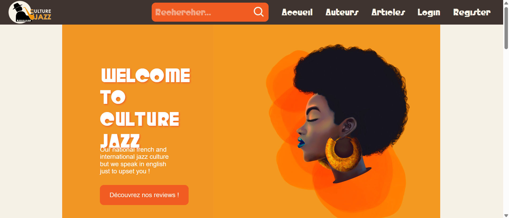

🎷 CultureJazz - Site web collaboratif

🎯 Objectif du projet
Ce projet avait pour but de créer un site web complet dédié au jazz, mettant en valeur artistes et articles, avec un design responsive et une navigation fluide. L'objectif était de produire un site professionnel en seulement 48 heures.
👤 Mon rôle dans le projet
Réalisé en collaboration avec le département MMI, j'ai participé à la conception du backend, à l'intégration HTML/CSS, ainsi qu'à l'optimisation pour l'expérience utilisateur.
🧠 Compétences développées
- Développement backend avec PHP (laravel)
- gestion de base de données
- Intégration de fonctionnalités backend sur le frontend
- Travail intensif en équipe sur un projet fullstack
- Gestion de projet rapide et coordination sous pression
🛠️ Compétences utilisées
Ce projet a été un gros défi, car il demandait de livrer un site complet en seulement 48 heures. J'ai appris à travailler efficacement sous pression, à collaborer intensivement avec une équipe inconnue et à produire un résultat fonctionnel dans un temps limité.